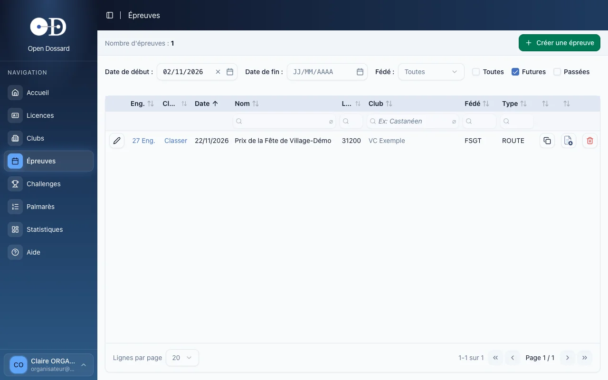
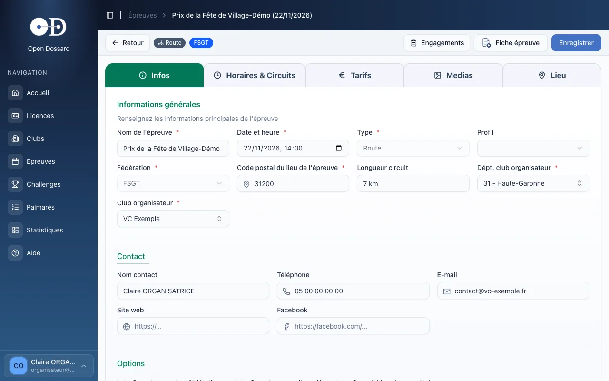
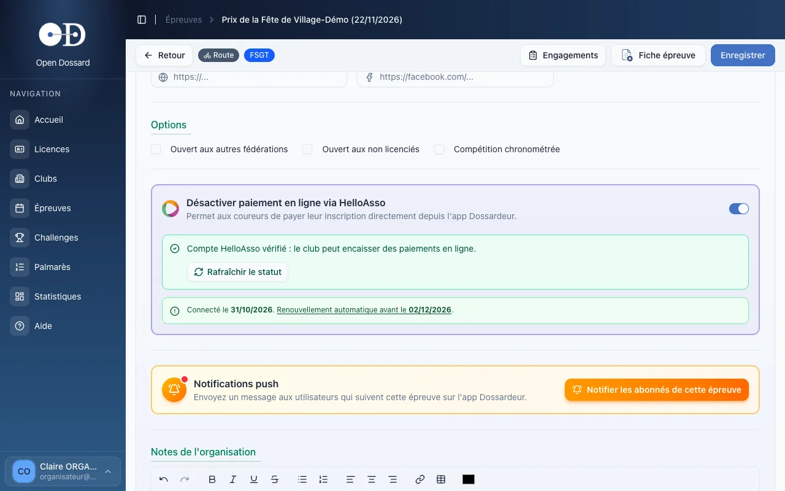
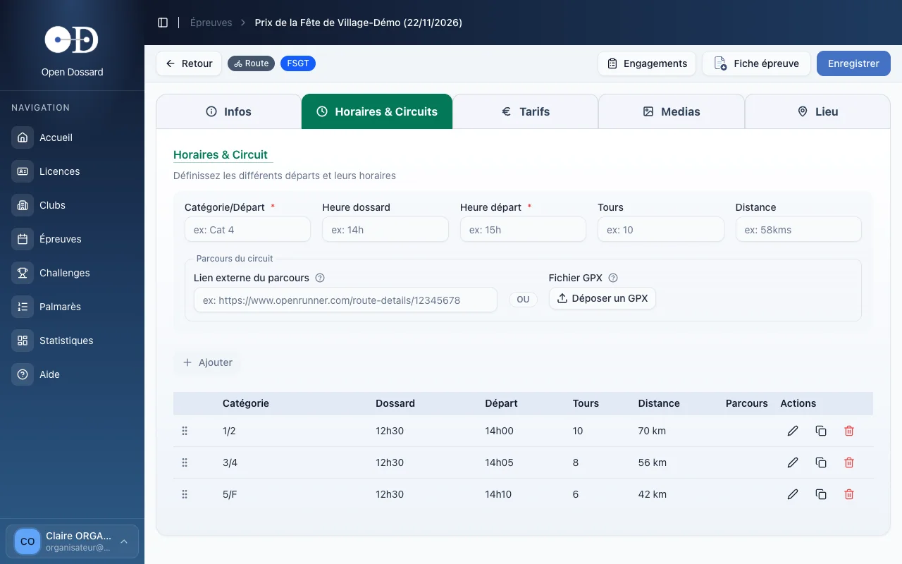
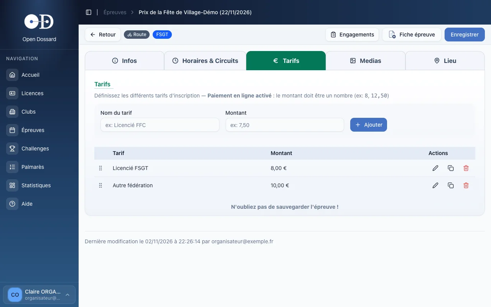
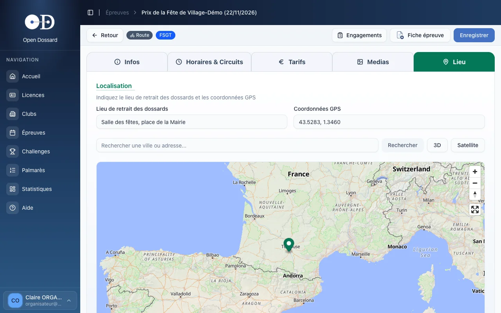
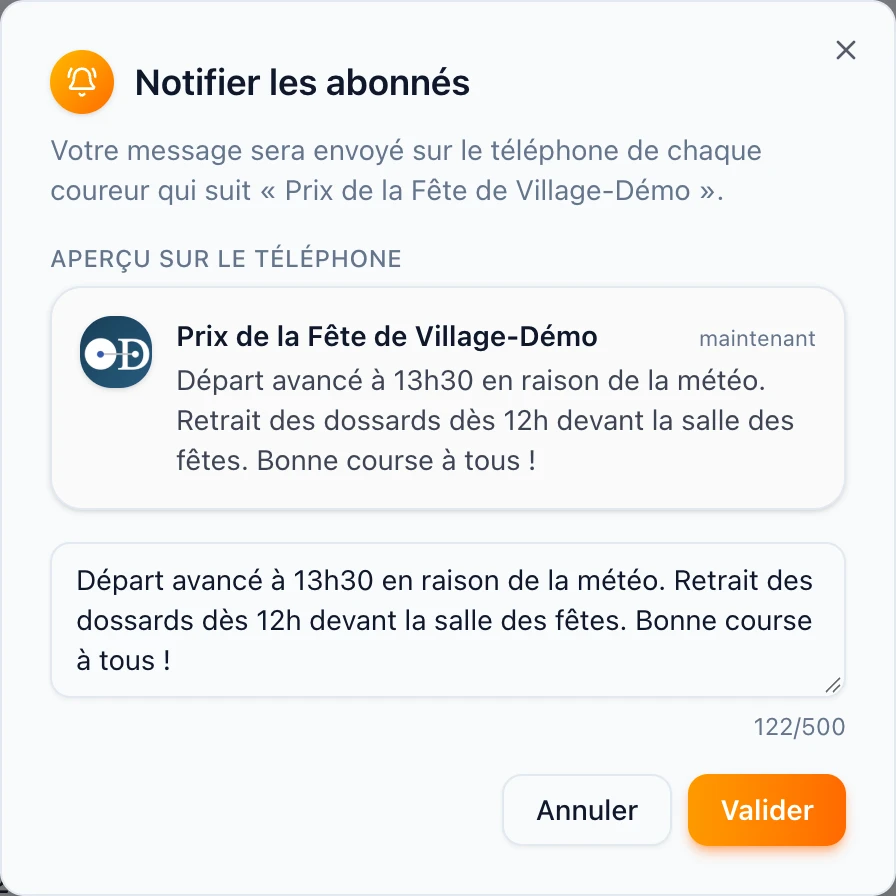
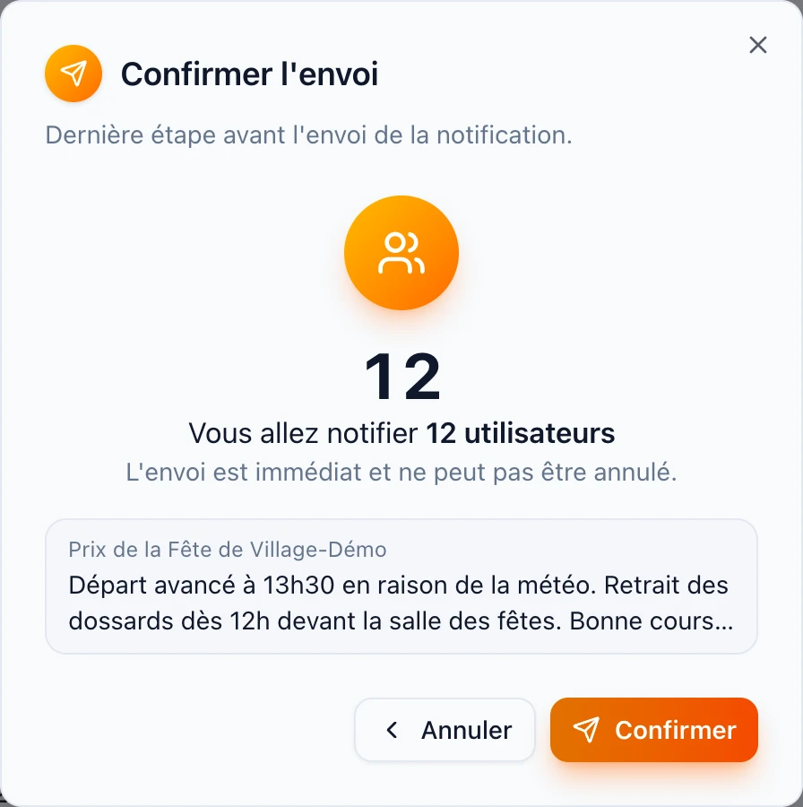

- • Une épreuve se crée depuis Épreuves, avec le bouton Créer une épreuve ou en dupliquant celle de l'an dernier.
- • Elle se remplit en cinq onglets : Infos, Horaires & Circuits, Tarifs, Medias, Lieu.
- • Pensez à cliquer sur Enregistrer après chaque série de modifications.
La liste des épreuves
Dans le menu, cliquez sur Épreuves. Les épreuves à venir apparaissent au-dessus de la ligne Aujourd'hui, les épreuves passées en dessous. Les cases Futures et Passées, les dates et les filtres de colonnes affinent la liste.

Sur chaque ligne :
- le crayon ouvre l'épreuve ;
- « 24 Eng. » ouvre les engagements et « Classer » (ou « 36 Class ») les classements ;
- les icônes de fin de ligne permettent de dupliquer l'épreuve, de télécharger sa fiche épreuve en PDF ou de la supprimer (seulement si elle n'a encore aucun engagé ni paiement).
Créer ou dupliquer une épreuve
- Cliquez sur Créer une épreuve, ou sur l'icône Dupliquer d'une épreuve existante.
- Remplissez l'onglet Infos (voir ci-dessous). Les champs marqués d'une étoile rouge sont obligatoires.
- Cliquez sur Enregistrer : l'épreuve est créée et les autres onglets deviennent pleinement utilisables (dépôt des fichiers GPX notamment).
- Complétez les horaires, les tarifs, le lieu et les médias, puis enregistrez à nouveau.
Dupliquer l'épreuve de l'an dernier reprend toutes ses informations : horaires, tarifs, lieu, contacts. Seule la date est à ressaisir.
Onglet Infos

Informations générales
- Nom, date et heure, code postal du lieu de l'épreuve ;
- Type (route, cyclo-cross, VTT, gravel, randonnée) et fédération ;
- Profil (montagne, vallonné, circuit plat…) et longueur du circuit, facultatifs ;
- département et club organisateur : le club doit faire partie de ceux rattachés à votre compte.
Le type et la fédération ne se modifient plus une fois l'épreuve enregistrée. En cas d'erreur, supprimez l'épreuve et recréez-la, ce qui n'est possible que tant qu'elle n'a ni engagé ni paiement HelloAsso.
Contact et options
Le contact (nom, téléphone, e-mail, site web, Facebook) est affiché aux coureurs. Les options conditionnent qui peut s'engager :
- Ouvert aux autres fédérations : sans cette case, seuls les licenciés de la fédération de l'épreuve peuvent être engagés ;
- Ouvert aux non licenciés : autorise l'engagement de coureurs sans licence ;
- Compétition chronométrée : ajoute la saisie des temps dans les classements.
Paiement en ligne via HelloAsso
Si le club est connecté à HelloAsso, un encadré permet d'activer le paiement en ligne : les coureurs paient alors leur inscription directement depuis l'application Dossardeur.

L'interrupteur ne s'active que si le compte HelloAsso du club est vérifié. Une fois le paiement activé, chaque montant de l'onglet Tarifs doit être un nombre (8, 12,50…) : les tarifs écrits en texte libre sont vidés et doivent être ressaisis.
Notifications push
L'encadré orange Notifications push permet d'envoyer un message aux coureurs qui suivent l'épreuve : voir Prévenir les coureurs abonnés.
Notes de l'organisation
Un éditeur de texte libre, en bas de l'onglet, pour toute information complémentaire : accès, parking, ravitaillement, règlement particulier…
Onglet Horaires & Circuits
Chaque ligne correspond à un départ. Pour en ajouter un :
- Saisissez la catégorie ou le départ (par exemple « 1/2 » pour les catégories 1 et 2 réunies) et l'heure de départ, obligatoires.
- Complétez si besoin l'heure de retrait des dossards, le nombre de tours et la distance.
- Indiquez le parcours : soit un lien externe (OpenRunner, VisuGPX, gpx-studio…), soit un fichier GPX, que les coureurs visualisent dans l'application Dossardeur.
- Cliquez sur Ajouter.

Dans la liste, les icônes permettent de modifier, dupliquer ou supprimer un départ. La poignée en début de ligne sert à changer l'ordre des départs par glisser-déposer.
Le dépôt d'un fichier GPX n'est possible qu'une fois l'épreuve enregistrée. Un même départ a soit un lien, soit un fichier, jamais les deux.
Onglet Tarifs
Ajoutez un tarif par profil de coureur : saisissez son nom (« Licencié FSGT », « Autre fédération »…) et son montant, puis cliquez sur Ajouter.

Les tarifs, comme les horaires, ne sont conservés qu'après un clic sur Enregistrer en haut à droite.
Onglet Medias
Après la course, ajoutez les liens vers les albums photos : un nom et une adresse par album. Ils sont proposés aux coureurs dans l'application Dossardeur.
Onglet Lieu
- Indiquez le lieu de retrait des dossards (« Salle des fêtes, place de la Mairie »…).
- Recherchez la ville ou l'adresse, puis double-cliquez sur la carte à l'endroit exact : les coordonnées GPS se remplissent automatiquement.
- Enregistrez l'épreuve.

Le lieu de retrait et sa position sont affichés aux coureurs dans l'application Dossardeur.
Prévenir les coureurs abonnés
Dans l'application Dossardeur, les coureurs peuvent suivre une épreuve en l'ajoutant à leurs favoris. Vous pouvez leur envoyer un message, reçu en notification sur leur téléphone : changement d'horaire, de parcours ou de lieu de retrait des dossards, annulation, rappel la veille…
- Ouvrez l'épreuve, onglet Infos, et descendez jusqu'à l'encadré orange Notifications push.
- Cliquez sur Notifier les abonnés de cette épreuve.
- Rédigez votre message (500 caractères au plus). L'aperçu sur le téléphone montre la notification telle qu'elle s'affichera : le nom de l'épreuve en titre, votre message en dessous.
- Cliquez sur Valider.
- Vérifiez le nombre d'abonnés qui recevront le message et relisez-le une dernière fois, puis cliquez sur Confirmer.


Un message de confirmation indique ensuite combien d'utilisateurs et d'appareils ont été notifiés. En touchant la notification, le coureur arrive directement sur la fiche de l'épreuve dans Dossardeur.
Une notification envoyée ne peut pas être annulée ni modifiée. Relisez bien horaires et lieux avant de confirmer ; en cas d'erreur, envoyez un second message rectificatif.
L'envoi est réservé aux organisateurs du club de l'épreuve. Seuls les coureurs qui suivent l'épreuve dans Dossardeur, avec les notifications autorisées sur leur téléphone, reçoivent le message. Si personne ne suit encore l'épreuve, la fenêtre l'indique (« Aucun abonné ») et l'envoi est impossible.
La fiche épreuve
Le bouton Fiche épreuve, en haut de l'écran, génère un PDF récapitulatif de l'épreuve, à transmettre à la fédération ou à afficher. Le bouton Engagements mène directement à la liste des engagés.